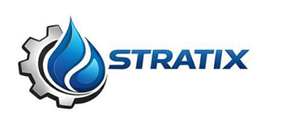

Excelencia que construye confianza
Claudio Gutiérrez Sibila
Director de Ingeniería
Ingeniería y optimización de plantas de agua para minería e industria. Soporte técnico, diagnóstico operacional y soluciones orientadas a continuidad del proceso.
PTASPTAPROOptimizaciónMineríaCAPEX/OPEX